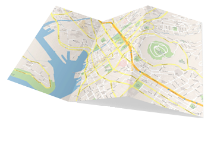

Telecom
Introduction of GIS in telecom projects
Traditionally, it is considered that for telecommunication projects, such as planning of Internet networks, for example, an ideal solution is the use of CAD systems.
In VMAPS we will prove that this is not so and will make your work more productive and profitable.
We have successfully completed the transition from CAD to GIS for several projects on designing new fiber-optic systems and saved time and money for our customers.
GIS Opens a wide range of opportunities in relation to CAD systems.

First of all, your data will be georeferenced, which will speed up your work thanks to the ability to quickly connect the map / satellite image for a more accurate relationship between the project and the terrain. It also allows you to quickly export data between different devices and programs, for example, you can export the whole project or certain parts of it to Google Earth - for presentation and other needs.